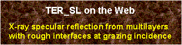

This page is a CGI interface to my program TER_sl simulating x-ray
specular reflection from multilayers with the account for interface roughness
or transition layers. The method implemented in TER_sl is the
recursive matrix algorithm (RMA) developed for
grazing-incidence x-ray diffraction. The RMA is neither Parratt's nor Abeles',
although it can be reduced to each of them. The advantage of RMA is that the
same code works for both the diffraction and reflection problems.
 Starting July 2005 the program can also
calculate and print the intensity of standing waves inside the target.
The standing waves can be used to analyze secondary photo emission effects
like fluorescence, the formation of periodic wavefields inside multilayers,
the Yoneda effect, and etc.
Starting July 2005 the program can also
calculate and print the intensity of standing waves inside the target.
The standing waves can be used to analyze secondary photo emission effects
like fluorescence, the formation of periodic wavefields inside multilayers,
the Yoneda effect, and etc.
This short guide provides some explanations on the TER_sl
data input and outlines the restrictions of this Web interface.
The TER_sl program is executed on my PC, which runs a Web server
under Windows operating system. Since this PC is shared by all of the WEB
users of my x-ray library, please, avoid overloading the
server by running multiple tasks at the same time.
To obtain the results from TER_sl you need to fill out the input form
and click on the SUBMIT button. If your input is correct, the results will be
presented as a figure and a reference to downloadable ZIP file with the data.
Otherwise, an error report will be returned.
The specification of surface layer profile is implemented with a simple
script language. A typical syntax is:
; comments are allowed in any line, but should
; not contain special symbols like '"*?$!@%
period=5
t=10 code=GaAs w0=0.8 sigma=2
t=10 code=GaAs x=0.3 code2=AlAs x2=0.7 sigma=2
t=10 code=SiGe rho=0.9 sigma=2
t=10 x0=(5e-4,7e-6) tr=5
t=10 w0=.5 tr=4
t=10 w0=0.5
t=10
end period
Here:
- ";" and "!" are the comment signs. The
lines starting with these symbols are ignored and if these symbols are
present at the middle of a line, everything to the right of them is ignored
too.
- "period=" and "end period" mark the
beginning and the end of a periodic group of layers. The maximum of two
enclosed periods is allowed.
- "t=10" is the layer thickness in Angstroms.
NOTE: this is the only parameter of layer which cannot be skipped.
- "code=" is a code of material in the X0h database. Use this code for automatic
calculation of layers x0 (chi 0). For the reference of available
codes see the menu for the substrate or in the box at the right side of the
profile input field. Please, be advised that the codes are case sensitive
(while the script keywords are not).
Alternatively you can specify a valid chemical formula for the code and
the material density ("rho=").
If no code is specified, the substrate code is used by default.
- "x=", "code2=",
"x2=", "code3=" are the parameters to
specify composite materials and solid solutions. For example, a structure
like Ga0.3Al0.7As can be specified as: "code=GaAs
x=0.3 code2=AlAs", or even shorter: "x=0.3 code2=AlAs"
(provided that the substrate is GaAs). You can also specify
"x2=0.7", but this is redundant, because the program automatically
takes care of the sum of all "xN" being equal to one (e.g. the input
like "x2=0.8" in the above example would cause an error message).
Maximum of 4 codes are allowed and all of them must be valid ones in the
X0h database.
- "x0=" is the layer x-ray susceptibility
chi0. This parameter, when specified, replaces the data given by
the X0h database.
NOTE: x0 comes from the dynamical diffraction theory. It is related
with the parameters delta and eta often used for reflectivity
as: x0=2*(delta+i*eta).
- "w0=" is a Debye-Waller-like factor for x0. It may
be used to correct the x0 value provided by the X0H database:
x0=w0*x0
By default, this factor is equal to one. Unlike usual Debye-Waller factor, w0
can be greater than one, because it is simply one more way to specify x0.
- "sigma=" and "tr=" are the rms roughness
and the transition layer thickness at the upper layer interface, respectively,
expressed in Angstroms. You are not allowed to specify non-zero values for
both of these parameters for the same layer and the values should not exceed
the layer thickness. The calculations with "sigma" are much faster.
However, at sigma > 5A they become inaccurate (the Nevot and Croce method
becomes inapplicable) and "tr"should be used instead (tr=2*sigma).
Here is a practical example -- a profile for 20-period AlAs/GaAs superlattice
with 100 Angstroms of GaAs and 70 Angstroms of AlAs in each period; the structure
is covered by additional 200A of GaAs and, finally, there is some 20A amorphous
oxide layer on the surface:
; Oxide layer:
t=20. w0=0.7
; -- w0=0.7 because of reduced layer density
; Cap layer:
t=200.
; -- when the code is not specified, then
; substrate code (GaAs) is used
; Superlattice:
period=20
t=100.
t=70. code=AlAs
end period
For the rest of parameters you are suggested to follow the common sense. To
ensure that your input was correct, please verify respective listing file --
a file with the ".TBL" extension in the ZIPped archive
referred from the TER_sl results screen.
To simplify understanding the TER_sl you are provided the templates
listed below. All the templates link to the same program and provide
the same functionality. They differ by preloaded data to demonstrate some
possible applications of TER_sl.
Besides, when submitting the TER_sl task, it is possible to check the
progress watching option. The progress watching is obviously more comfortable,
but it might not work with some old Web browsers. Also, it is a bit slower
because of putting an additional load on the network and launching each 5
seconds a watch program on my computer. Welcome to try both of the ways and
choose the most convenient for your needs.
Here is a tool to retrieve the results of finished jobs if you know the job ID.
Some possible uses of this tool are:
- You started a job with the progress watch option; the server returned
the job ID and began reporting the progress. However, you found that the
calculations would take too long. Then, you may break the connection and retrieve
the data later on with this tool. If the calculations are not finished, the
tool will resume the watch process.
- The data are accidentally deleted from your client computer and you
want another copy of them. In this case you should be aware that results are
usually stored on the server for about one day after respective job is finished.